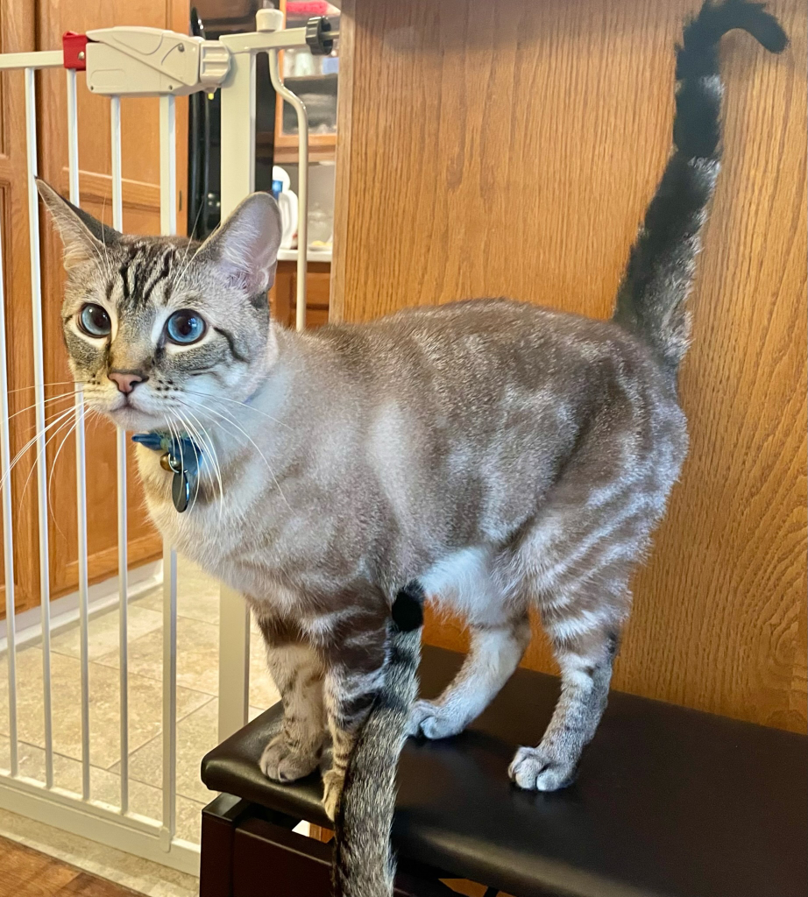
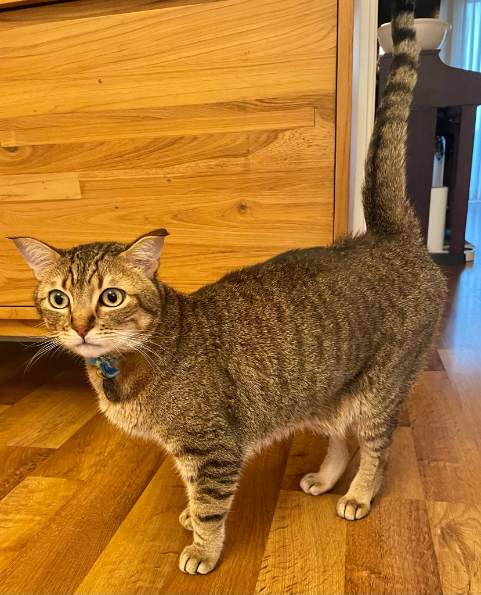

| 名前 | ふゆ | なつ |
|---|---|---|
| 写真 |  |  |
| 誕生日 | 2017年9月5日 | 2017年9月5日 |
| 品種 | ミックス | ミックス |
| 性別 | オス | オス |
| 体重 | 6kg | 6kg弱 |
| 既往歴 | なし | 2023年1月 腸重積 手術既往あり （原因不明） |
登録しているので、病院で確認ができます
完全室内飼い（インドア・キャット）です。
外の世界を知りません。
危険な植物なども知らないため、食べてしまう可能性があります。
メイン：ウエットフード（ 「黒缶」アイシア）
間 食：ドライフード
いなばのちゅーるも好きです
※なつは食べ慣れないフードの場合、吐くこともあります
● 朝晩2回、一人当たり1日黒缶一個分
（1個を半分にしてあげることを、朝晩2回しています）
● 昼と深夜にドライフードを10gずつ（自動餌やり器がつながっていれば自動で出ます）
※日本の猫より大きいので、多めくらいでちょうどいいです
猫ゲート右の茶色の扉の中にあります。
同様に、リッターボックスや砂もその中にあります
Tokyo Cat Specialists
03-6435-4595
日本、〒108-0073 東京都港区三田４丁目１７−２６ パティーナ三田台 1F
Google Maps
東京都大田区 大森駅周辺
ライト ダニエル、ライト 亜希
ふゆとなつは、母親が同じで父親違いの兄弟です。